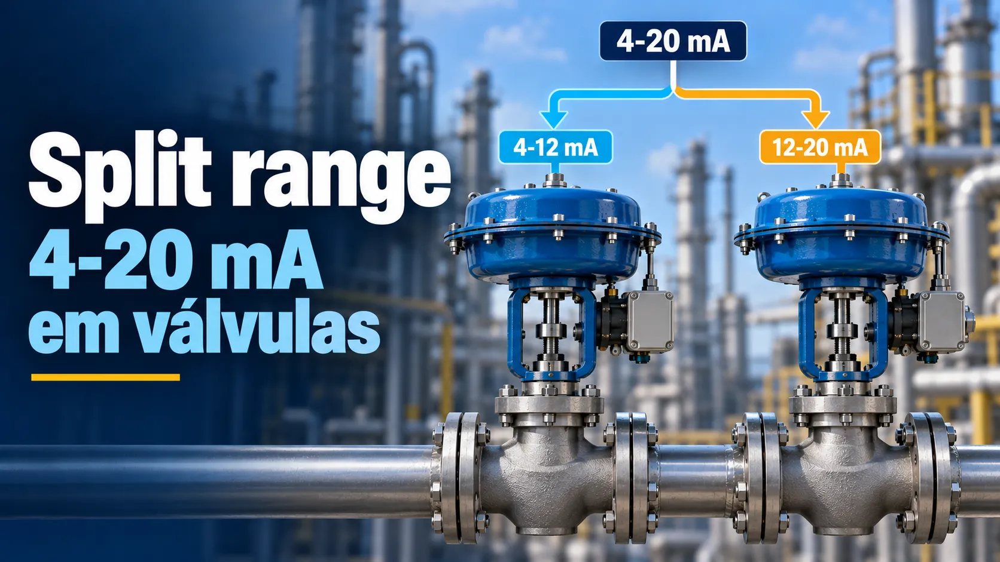

Split Range 4-20 mA em válvulas de controle
Conteúdo técnico: ALOGY Engenharia · Atualizado em: 11/09/2026

Em uma estratégia split range, a mesma saída do controlador comanda duas ou mais válvulas em faixas diferentes. A divisão pode ser feita no PLC/DCS, nos positioners ou em outra camada prevista pelo projeto. O ponto crítico é garantir que a interpretação do sinal seja coerente em todos os equipamentos.
Um exemplo simples
Se a válvula A usa 4–12 mA e a B usa 12–20 mA, 8 mA representa aproximadamente 50% da faixa da A; 16 mA, cerca de 50% da B. Em 12 mA está a região de transição. A ação direta/reversa e a caracterização da válvula podem alterar o comportamento físico esperado.
Overlap e deadband são decisões de processo
As faixas não precisam necessariamente se encontrar em um ponto exato. Pode existir overlap, em que ambas atuam simultaneamente por uma faixa, ou deadband, em que nenhuma se move. Isso deve ser intencional e documentado; não é algo a ser criado durante calibração para “melhorar” a malha.
Onde a divisão é feita?
- PLC/DCS: duas saídas podem ser calculadas a partir de uma única variável de controle.
- Positioner: cada equipamento pode receber o mesmo 4–20 mA e aplicar seu próprio input range.
- I/P/pneumática: sistemas legados podem realizar a divisão de outra forma.
Antes de ajustar qualquer positioner, identifique quem é a autoridade da divisão. Alterar a faixa no equipamento errado pode duplicar ou remover a transformação.
Loop check do split range
- Coloque a malha em condição segura/manual conforme o procedimento.
- Aplique pontos abaixo, na região e acima da transição.
- Registre saída do controlador, mA reais, input do positioner, posição comandada e feedback.
- Confirme ação de falha, intertravamentos e lógica de seleção.
- Repita subida e descida para detectar histerese/stiction.
- Documente overlap/deadband real e compare com a filosofia de controle.
Problemas típicos
- duas válvulas recebem ranges iguais por engano;
- ação reversa configurada em uma camada e novamente em outra;
- positioner calibrado corretamente, mas scaling no DCS incorreto;
- feedback de posição não corresponde à abertura real;
- stiction perto da região de transição provoca oscilação;
- falha segura de uma válvula contradiz a estratégia esperada.
Ferramentas relacionadas
Aviso técnico
Os ranges 4–12 e 12–20 mA são exemplos. Use a filosofia de controle, causa e efeito, configuração real e procedimento da planta. Não movimente válvulas conectadas ao processo sem autorização e condição segura.